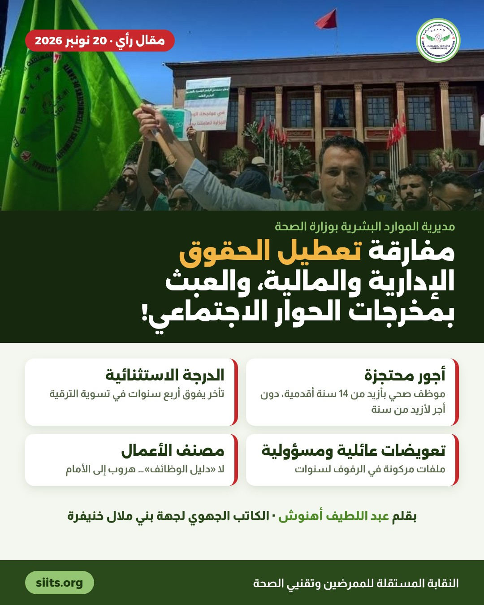

مديرية الموارد البشرية بوزارة الصحة: مفارقة تعطيل الحقوق الإدارية والمالية، والعبث بمخرجات الحوار الاجتماعي! | عبد اللطيف أهنوش

بقلم: عبد اللطيف أهنوش، الكاتب الجهوي لجهة بني ملال خنيفرة
في الوقت الذي يرفع فيه شعار إصلاح المنظومة الصحية وتثمين الرأسمال البشري كركيزة أساسية لورش الحماية الاجتماعية، نجد أنفسنا أمام مفارقة صارخة وعجيبة داخل وزارة الصحة والحماية الاجتماعية؛ مفارقة بطلتها «مديرية الموارد البشرية» التي تحولت، بدل أن تكون رافعة لتحفيز الأطر الصحية وصون حقوقها، إلى حجر عثرة وعامل تعطيل ممنهج لمصالح الموظفين، وتجميد لأجورهم وتعويضاتهم المشروعة.
فلا يمكن لأي عاقل أن يستوعب في مغرب الرقمنة والإدارة الحديثة أن يظل موظف صحي (لأزيد من 14 سنة بالوظيفة، وهذه حالة ليست من وحي الخيال) يشتغل في الصفوف الأمامية ويقدم خدماته للمواطنين لأزيد من سنة كاملة دون أن يتوصل بأجره الشهري (نظرا لعكوسات إدارية/وزارية)! والأدهى من ذلك هو غياب أي حل جذري أو حتى جواب إداري واضح ومقنع من لدن مديرية الموارد البشرية يفسر هذا الاحتجاز غير المبرر للأجور. لقد أصبح لزاماً على الموظف الصحي، بدل التركيز على أداء واجبه المهني والإنساني داخل المؤسسات الاستشفائية، أن يضطر للتنقل مراراً وتكراراً صوب الإدارة المركزية بالرباط، متكبداً عناء السفر ومصاريف التنقل، فقط ليطالب بأبسط حقوقه الدستورية والقانونية: أجر مقابل عمل! فكيف يطلب من مهني صحة يعاني من انعدام الاستقرار المادي والاجتماعي أن يضمن جودة الخدمات الصحية؟
لا يتوقف العبث الإداري عند حدود التوظيفات الجديدة وتسوية الأجور، بل يمتد ليشمل شللاً شبه تام في تدبير المسارات المهنية والمالية للأطر الصحية: • الترقية للدرجة الاستثنائية: تأخر غير مبرر يفوق الأربع سنوات في تسوية وضعية الممرضين وتقنيي الصحة المستحقين للترقية للدرجة الاستثنائية، في ضرب صارخ لمبدأ تكافؤ الفرص والأثر الرجعي العادل. • التعويضات العائلية وتعويضات المسؤولية: ملفات مركونة في الرفوف لسنوات دون معالجة، مما يحرم الموظفين من مستحقاتهم الأسرية ومن تعويضاتهم عن مهام التسيير والمسؤولية التي يمارسونها فعلياً. • تعويضات المناطق: تماطل مستمر في صرف هذه التعويضات الهزيلة.
وقمة العبث الوزاري تتجلى في كون هذه المديرية نفسها، التي أثبتت عجزها البنيوي وبطأها الشديد في تدبير مهامها الأصلية واليومية البسيطة، هي من تستمر في الإشراف على ملف الحوار الاجتماعي القطاعي! والنتيجة الحتمية لهذا التناقض هي حوار اجتماعي يراوح مكانه، يطبعه التسويف، والبطء القاتل في تنزيل الاتفاقات، بل والتلاعب بمضامين المحاضر والالتزامات الموقعة، ومحاولة إفراغ المطالب النقابية من جوهرها الحقيقي، ونسجل أن مغالطة «مصنف الأعمال» و«دليل الوظائف» هروب إلى الأمام.
يتجلى هذا الهروب الممنهج بوضوح في ملف التوصيف القانوني للمهن الصحية؛ ففي الوقت الذي تناضل فيه النقابة المستقلة من أجل إخراج «مصنف الأعمال» الذي يحدد بدقة وصرامة مهام واختصاصات الممرضين وتقنيي الصحة ويحميهم قانونياً من المتابعات ومن التداخل في المهام والانزلاق نحو ممارسات خارج إطار اختصاصهم، يخرج علينا السيد مدير الموارد البشرية للحديث فقط عن «دليل الوظائف»!
ختاماً، إن استمرار هذا النهج التدبيري العقيم بمديرية الموارد البشرية لم يعد مقبولا بأي حال من الأحوال. فإصلاح المنظومة الصحية يبدأ أولا بإصلاح الإدارة المركزية، وربط المسؤولية بالمحاسبة، والتعجيل الفوري بتسوية كافة الأجور والترقيات والتعويضات العالقة دون قيد أو شرط، والالتزام الصادق والحرفي بمخرجات الحوار الاجتماعي، وعلى رأسها إخراج مصنف أعمال حقيقي يصون كرامة الممرضين وتقنيي الصحة ويحمي ممارستهم المهنية.
فتح في تطبيق النقابة